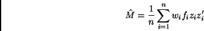
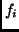
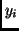
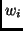
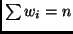
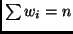

Next: Quadratic phd
Up: Methods available
Previous: Sliced average variance estimation
Li (1992) proposed the method called principal Hessian directions, or pHd.
This method examines the matrix  given by
given by

where  is either equal to  (method phdy) or is an ols
residual (method phd or phdres), and  is the weight for the  -th
observation (recall again that we assume that , and if this is
not satisfied the program rescales the weights to meet this condition).
While all methods produce
matrices whose eigenvectors are consistent estimates
of vectors in
-th
observation (recall again that we assume that , and if this is
not satisfied the program rescales the weights to meet this condition).
While all methods produce
matrices whose eigenvectors are consistent estimates
of vectors in
 , the
residual methods are more suitable for tests of dimension. See Cook (1998,
Chapter 12) for details.
Output for phd is again similar to sir, except for the tests. Here is
the output for the same setup as before, but for method phdres:
, the
residual methods are more suitable for tests of dimension. See Cook (1998,
Chapter 12) for details.
Output for phd is again similar to sir, except for the tests. Here is
the output for the same setup as before, but for method phdres:
> i2 <- update(i1,method="phdres")
> summary(i2)
Call:
dr(formula = LBM ~ Ht + Wt + log(RCC) + WCC, method = "phdres")
Terms:
LBM ~ Ht + Wt + log(RCC) + WCC
Method:
phd, n = 202.
Eigenvectors:
Dir1 Dir2 Dir3 Dir4
Ht 0.12764 -0.0003378 0.005550 0.02549
Wt -0.02163 0.0326138 -0.007342 -0.01343
log(RCC) -0.74348 0.9816463 0.999930 -0.99909
WCC 0.65611 -0.1879008 -0.007408 -0.03157
Dir1 Dir2 Dir3 Dir4
Eigenvalues 1.4303 1.1750 1.1244 0.3999
R^2(OLS|dr) 0.2781 0.9642 0.9642 1.0000
Asymp. Chi-square tests for dimension:
Stat df Normal theory Indep. test General theory
0D vs >= 1D 35.015 10 0.0001241 0.005427 0.01811
1D vs >= 2D 20.248 6 0.0025012 NA 0.03200
2D vs >= 3D 10.281 3 0.0163211 NA 0.05530
3D vs >= 4D 1.155 1 0.2825955 NA 0.26625
The column of tests called ``normal theory" were proposed by Li (1992) and
require that the predictors are
normally distributed. These statistics are asymptotically distributed as
Chi-square, with the degrees of freedom shown.
When the method is phdres additional tests are provided.
Since this method is based on residuals, it gives tests concerning the
central subspace for the regression of the residuals on  rather than the
response on . The subspace for this residual regression may be, but
need not be, smaller than the subspace for the original regression.
For example, the column
marked ``Indep. test" is essentially a test of
rather than the
response on . The subspace for this residual regression may be, but
need not be, smaller than the subspace for the original regression.
For example, the column
marked ``Indep. test" is essentially a test of  versus
versus  described
by Cook (1998) for the residual regression. Should the significance level
for this test be large, we might conclude that the residual regression
subspace is of dimension zero. From this we have two possible conclusions:
(1) the dimension of the response regression may be 1 if using the residuals
removed a linear trend, or (2) the dimension may be 0 if the residuals did
not remove a linear trend.
Similarly, if the significance level for the independence test is small, then
we can conclude that the dimension is at least 1. It could be one if the
method is picking up a nonlinear trend in the OLS direction, but it will be
2 if the nonlinearity is in some other direction.
The independence test and the final column, also from Cook
(1998), use the same test statistic, but different distributions based on
different assumptions.
Significance levels are obtained by comparing the statistic to the
distribution of a random linear combination of Chi-square statistics, each
with one df. These statistics do not require normality
of the predictors. The way the significance levels
in this column are approximated used the method of Bentler and Xie (2000).
described
by Cook (1998) for the residual regression. Should the significance level
for this test be large, we might conclude that the residual regression
subspace is of dimension zero. From this we have two possible conclusions:
(1) the dimension of the response regression may be 1 if using the residuals
removed a linear trend, or (2) the dimension may be 0 if the residuals did
not remove a linear trend.
Similarly, if the significance level for the independence test is small, then
we can conclude that the dimension is at least 1. It could be one if the
method is picking up a nonlinear trend in the OLS direction, but it will be
2 if the nonlinearity is in some other direction.
The independence test and the final column, also from Cook
(1998), use the same test statistic, but different distributions based on
different assumptions.
Significance levels are obtained by comparing the statistic to the
distribution of a random linear combination of Chi-square statistics, each
with one df. These statistics do not require normality
of the predictors. The way the significance levels
in this column are approximated used the method of Bentler and Xie (2000).
Next: Quadratic phd
Up: Methods available
Previous: Sliced average variance estimation
Sandy Weisberg
2002-01-10